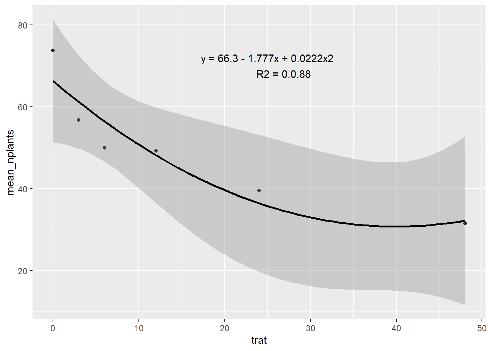
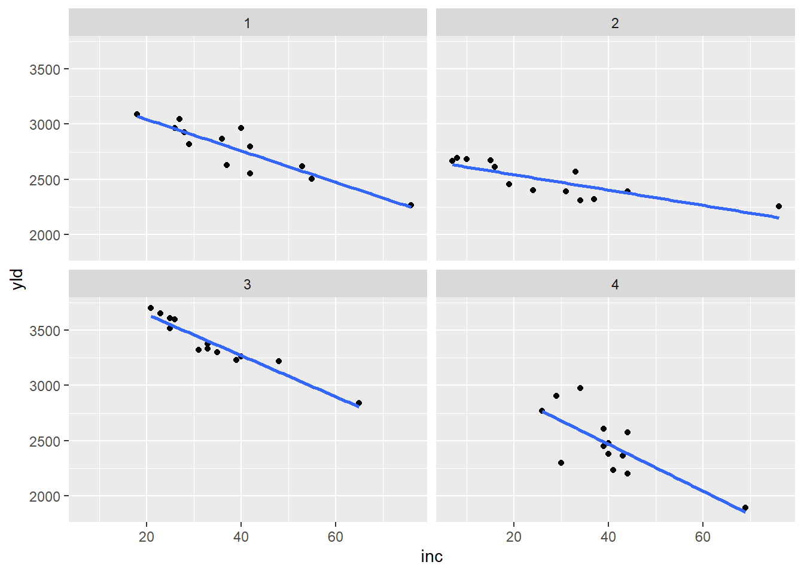

Análise de Correlação
A análise de correlação é utilizada para verificar a intensidade e a direção da relação linear entre duas variáveis contínuas. Seu principal objetivo é avaliar até que ponto as variáveis se associam — ou seja, se tendem a variar juntas de forma proporcional.
Essa análise pode indicar:
Correlação positiva: quando o aumento de uma variável está associado ao aumento da outra;
Correlação negativa: quando o aumento de uma variável está associado à diminuição da outra;
Ausência de correlação: quando não há uma relação linear evidente entre as variáveis.
O coeficiente de correlação de Pearson é a medida mais comum e varia entre -1 e +1:
Valores próximos de +1 indicam forte correlação positiva;
Valores próximos de -1 indicam forte correlação negativa;
Valores próximos de 0 indicam correlação fraca ou inexistente.
É importante destacar que a correlação não implica causalidade, ou seja, uma variável pode estar associada à outra sem que necessariamente uma cause a outra.
Carregamento de pacotes
Importando o conjunto de dados
Visualização gráfica
Ajustando modelo linear simples e quadratico
Para ajustar modelos de regressão linear — seja simples ou quadrático — utiliza-se a função lm() no R. Essa função recebe como argumentos uma fórmula que define a relação entre a variável dependente e a(s) variável(is) independente(s), além do conjunto de dados a ser utilizado.
Por exemplo, para um modelo linear simples, a fórmula seria y ~ x, onde y é a variável resposta e x é a variável explicativa. Para um modelo quadrático, a fórmula pode ser y ~ x + I(x^2), incluindo o termo ao quadrado de x.
O modelo ajustado é armazenado como um objeto do tipo lm, que pode ser examinado com a função summary(). Esse resumo fornece os coeficientes estimados, valores-p, estatísticas de ajuste (como o R²) e outros diagnósticos úteis.
Coeficiente de Determinação (R²)
O R² representa a proporção da variação da variável resposta que é explicada pelo modelo ajustado. Seu valor varia entre 0 e 1:
R² = 0: o modelo não explica nenhuma variação nos dados;
R² = 1: o modelo explica toda a variação observada.
Quanto maior o R², melhor o modelo se ajusta aos dados, indicando maior capacidade explicativa por parte das variáveis independentes.
Code
estande2 <- estande |>
filter(exp ==2) |>
group_by(trat) |>
summarise(mean_nplants = mean(nplants))
estande2|>
ggplot(aes(trat, mean_nplants))+
geom_point()+
#geom_line()
geom_smooth(formula = y ~ poly(x, 2), method = "lm", color = "black")+
annotate(geom = "text",
x = 25, y = 70,
label = "y = 66.3 - 1.777x + 0.0222x2
R2 = 0.0.88")
Modelo Quadrático
Diferente do modelo linear, que descreve a relação entre duas variáveis por meio de uma linha reta, o modelo quadrático permite identificar padrões não lineares, com comportamento curvo.
Para ajustar um modelo quadrático no R, utiliza-se a função lm(), incluindo o termo ao quadrado da variável independente na fórmula. Por exemplo, para modelar a relação entre uma variável dependente y e uma independente x.
Code
Call:
lm(formula = mean_nplants ~ trat, data = estande2)
Residuals:
1 2 3 4 5 6
12.764 -2.134 -6.782 -3.327 -4.669 4.147
Coefficients:
Estimate Std. Error t value Pr(>|t|)
(Intercept) 60.9857 4.5505 13.402 0.000179 ***
trat -0.7007 0.2012 -3.483 0.025294 *
---
Signif. codes: 0 '***' 0.001 '**' 0.01 '*' 0.05 '.' 0.1 ' ' 1
Residual standard error: 8.117 on 4 degrees of freedom
Multiple R-squared: 0.752, Adjusted R-squared: 0.69
F-statistic: 12.13 on 1 and 4 DF, p-value: 0.02529
Call:
lm(formula = mean_nplants ~ trat + trat2, data = estande2)
Residuals:
1 2 3 4 5 6
7.4484 -4.4200 -6.4386 1.0739 3.0474 -0.7111
Coefficients:
Estimate Std. Error t value Pr(>|t|)
(Intercept) 66.30156 4.70800 14.083 0.000776 ***
trat -1.77720 0.62263 -2.854 0.064878 .
trat2 0.02223 0.01242 1.790 0.171344
---
Signif. codes: 0 '***' 0.001 '**' 0.01 '*' 0.05 '.' 0.1 ' ' 1
Residual standard error: 6.517 on 3 degrees of freedom
Multiple R-squared: 0.8801, Adjusted R-squared: 0.8001
F-statistic: 11.01 on 2 and 3 DF, p-value: 0.04152Duas variáveis resposta
Ajuste de Modelo Linear Simples e Quadrático
Para ajustar modelos de regressão linear, seja simples ou quadrático, utiliza-se a função lm() no R. Essa função recebe como argumentos uma fórmula que define a relação entre a variável dependente e a(s) variável(is) independente(s), além do conjunto de dados a ser utilizado.
Por exemplo, para um modelo linear simples, a fórmula seria y ~ x, onde y é a variável resposta e x é a variável explicativa. Para um modelo quadrático, a fórmula pode ser y ~ x + I(x^2), incluindo o termo ao quadrado de x.
O modelo ajustado é armazenado como um objeto do tipo lm, que pode ser examinado com a função summary(). Esse resumo fornece os coeficientes estimados, valores-p, estatísticas de ajuste (como o R²) e outros diagnósticos úteis.
Importando o conjunto de dados
Visualizando os dados
Code

Filtrando o experimento 1 (study = 1):
# A tibble: 13 × 5
study treat inc scl yld
<dbl> <dbl> <dbl> <dbl> <dbl>
1 1 1 76 2194 2265
2 1 2 53 1663 2618
3 1 3 42 1313 2554
4 1 4 37 1177 2632
5 1 5 29 753 2820
6 1 6 42 1343 2799
7 1 7 55 1519 2503
8 1 8 40 516 2967
9 1 9 26 643 2965
10 1 10 18 400 3088
11 1 11 27 643 3044
12 1 12 28 921 2925
13 1 13 36 1196 2867A função cor.test() é utilizada para calcular o coeficiente de correlação entre duas variáveis numéricas. Além de fornecer o valor da correlação (como o coeficiente de Pearson), ela também realiza um teste de hipótese para verificar se essa correlação é estatisticamente significativa, ou seja, se é improvável que tenha ocorrido ao acaso.
Pearson's product-moment correlation
data: mofo1$inc and mofo1$yld
t = -6.8451, df = 11, p-value = 2.782e-05
alternative hypothesis: true correlation is not equal to 0
95 percent confidence interval:
-0.9699609 -0.6921361
sample estimates:
cor
-0.8999278 Filtrando o experimento 2:
# A tibble: 13 × 5
study treat inc scl yld
<dbl> <dbl> <dbl> <dbl> <dbl>
1 2 1 76 1331 2257
2 2 2 44 756 2393
3 2 3 24 338 2401
4 2 4 33 581 2568
5 2 5 37 588 2320
6 2 6 34 231 2308
7 2 7 31 925 2389
8 2 8 16 119 2614
9 2 9 10 394 2681
10 2 10 8 206 2694
11 2 11 15 275 2674
12 2 12 7 131 2666
13 2 13 19 588 2454
Pearson's product-moment correlation
data: mofo1$inc and mofo1$yld
t = -4.6638, df = 11, p-value = 0.0006894
alternative hypothesis: true correlation is not equal to 0
95 percent confidence interval:
-0.9426562 -0.4790750
sample estimates:
cor
-0.8149448 Filtrando o experimento 4:
# A tibble: 13 × 5
study treat inc scl yld
<dbl> <dbl> <dbl> <dbl> <dbl>
1 4 1 69 6216 1893
2 4 2 39 2888 2451
3 4 3 41 2272 2232
4 4 4 39 2868 2609
5 4 5 40 2412 2383
6 4 6 40 2372 2480
7 4 7 44 3424 2577
8 4 8 43 1744 2367
9 4 9 26 1456 2769
10 4 10 29 1732 2907
11 4 11 30 1080 2298
12 4 12 34 1592 2976
13 4 13 44 3268 2200
Pearson's product-moment correlation
data: mofo1$inc and mofo1$yld
t = -3.7242, df = 11, p-value = 0.003357
alternative hypothesis: true correlation is not equal to 0
95 percent confidence interval:
-0.9194503 -0.3327077
sample estimates:
cor
-0.7467931 Filtrando o experimento 3:
# A tibble: 13 × 5
study treat inc scl yld
<dbl> <dbl> <dbl> <dbl> <dbl>
1 3 1 65 5013 2839
2 3 2 33 3619 3375
3 3 3 40 2325 3264
4 3 4 35 2588 3301
5 3 5 48 3969 3220
6 3 6 31 1556 3321
7 3 7 39 3175 3229
8 3 8 25 1763 3517
9 3 9 26 2894 3595
10 3 10 21 350 3702
11 3 11 23 419 3652
12 3 12 25 644 3608
13 3 13 33 2850 3334Matrizes de Correlação
A matriz de correlação é uma tabela que exibe os coeficientes de correlação entre todos os pares de variáveis de um conjunto de dados. Cada célula da matriz indica a força e a direção da relação entre duas variáveis, geralmente usando o coeficiente de correlação de Pearson, embora outras medidas (como Spearman ou Kendall) também possam ser utilizadas, conforme o contexto da análise.
Gerando matriz de correlação para as variáveis selecionadas:
# A tibble: 13 × 5
study treat inc scl yld
<dbl> <dbl> <dbl> <dbl> <dbl>
1 3 1 65 5013 2839
2 3 2 33 3619 3375
3 3 3 40 2325 3264
4 3 4 35 2588 3301
5 3 5 48 3969 3220
6 3 6 31 1556 3321
7 3 7 39 3175 3229
8 3 8 25 1763 3517
9 3 9 26 2894 3595
10 3 10 21 350 3702
11 3 11 23 419 3652
12 3 12 25 644 3608
13 3 13 33 2850 3334
Pearson's product-moment correlation
data: mofo1$inc and mofo1$yld
t = -10.9, df = 11, p-value = 3.105e-07
alternative hypothesis: true correlation is not equal to 0
95 percent confidence interval:
-0.9872663 -0.8579544
sample estimates:
cor
-0.956692 Gráficos de Correlação
Para visualizar matrizes de correlação, o pacote corrplot é uma ferramenta amplamente utilizada no R. Ele oferece diversas funções para explorar e representar visualmente as relações entre variáveis em um conjunto de dados, facilitando a identificação de padrões de correlação.
Principais funções do pacote corrplot:
corr.test(): realiza testes estatísticos para matrizes de correlação, calculando coeficientes de correlação, valores-p e intervalos de confiança, permitindo avaliar a significância das correlações.corrplot(): gera gráficos que exibem a matriz de correlação com diferentes estilos visuais. Permite personalizar o tipo de gráfico, as cores, adicionar os valores numéricos dos coeficientes, além de possibilitar agrupamentos hierárquicos.
# A tibble: 13 × 5
study treat inc scl yld
<dbl> <dbl> <dbl> <dbl> <dbl>
1 3 1 65 5013 2839
2 3 2 33 3619 3375
3 3 3 40 2325 3264
4 3 4 35 2588 3301
5 3 5 48 3969 3220
6 3 6 31 1556 3321
7 3 7 39 3175 3229
8 3 8 25 1763 3517
9 3 9 26 2894 3595
10 3 10 21 350 3702
11 3 11 23 419 3652
12 3 12 25 644 3608
13 3 13 33 2850 3334
Pearson's product-moment correlation
data: mofo1$inc and mofo1$yld
t = -10.9, df = 11, p-value = 3.105e-07
alternative hypothesis: true correlation is not equal to 0
95 percent confidence interval:
-0.9872663 -0.8579544
sample estimates:
cor
-0.956692 Modelo de Kendall
O coeficiente de correlação de Kendall é uma medida não paramétrica que avalia a associação entre duas variáveis ordinais ou variáveis medidas em escala ordinal. Assim como o coeficiente de Pearson, o coeficiente de Kendall varia entre -1 e 1, indicando a direção e a força da relação.
Por ser não paramétrico, o método de Kendall é mais robusto em situações onde os dados não seguem uma relação linear ou quando as variáveis não possuem distribuição normal, sendo uma alternativa adequada para analisar associações em dados ordinais ou com distribuições não normais.
# A tibble: 13 × 5
study treat inc scl yld
<dbl> <dbl> <dbl> <dbl> <dbl>
1 3 1 65 5013 2839
2 3 2 33 3619 3375
3 3 3 40 2325 3264
4 3 4 35 2588 3301
5 3 5 48 3969 3220
6 3 6 31 1556 3321
7 3 7 39 3175 3229
8 3 8 25 1763 3517
9 3 9 26 2894 3595
10 3 10 21 350 3702
11 3 11 23 419 3652
12 3 12 25 644 3608
13 3 13 33 2850 3334
Shapiro-Wilk normality test
data: mofo1$inc
W = 0.87111, p-value = 0.05412
Shapiro-Wilk normality test
data: mofo1$yld
W = 0.92193, p-value = 0.2663
Spearman's rank correlation rho
data: mofo1$inc and mofo1$yld
S = 715.97, p-value = 7.166e-08
alternative hypothesis: true rho is not equal to 0
sample estimates:
rho
-0.9669458